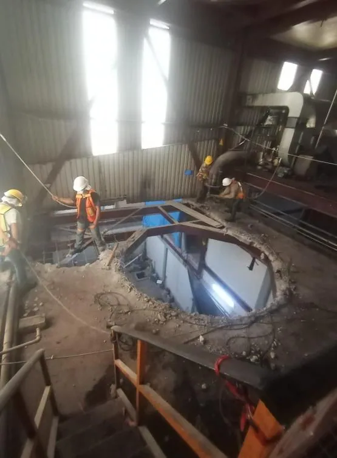
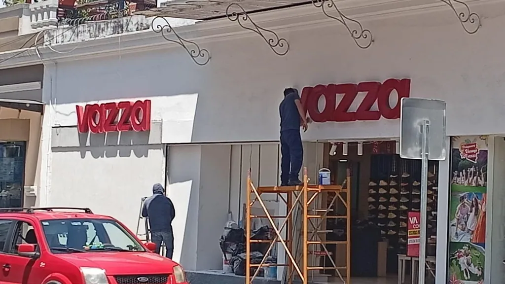

Experiencia que
toma forma.
Seis clientes protagonistas; sus intervenciones y fotografías reales, organizadas para explorar cada trabajo con claridad.
Una trayectoria.
Seis historias de obra.
Explora los clientes y las intervenciones documentadas en el perfil corporativo. Cada ficha agrupa los trabajos relacionados.

Intervenciones en planta y equipos de proceso
Precalentador de horno, instalación de paletizadora y mantenimiento mecánico en Planta Orizaba.

Fabricación inoxidable, tubería y montaje
Instalaciones para enfriador, protección de tablero eléctrico, estructuras y tolvas en acero inoxidable.

Proyecto de aglomerador de cinco niveles
Excavación, cimentación y estructura para un proyecto industrial de Cafés Finos de Córdoba.

Estructura para techumbre de multipanel
Fabricación de estructura para techumbre del restaurante Pozolaso.

Instalación de puertas para archivo
Instalación de puertas corredizas de aluminio blanco en el área de archivo.

Mantenimiento y adecuación de tiendas
Trabajos en luminarias, señalética, tablaroca, pintura y fachadas.
No encontramos proyectos con ese criterio. Prueba otro filtro.
Los nombres y alcances provienen del currículum empresarial, no de las fotografías nuevas sin identificar.
También puedes
explorar por especialidad.
Explora las galerías por proyecto y especialidad, con fotografías originales del perfil corporativo.
Abrir galería de trabajos